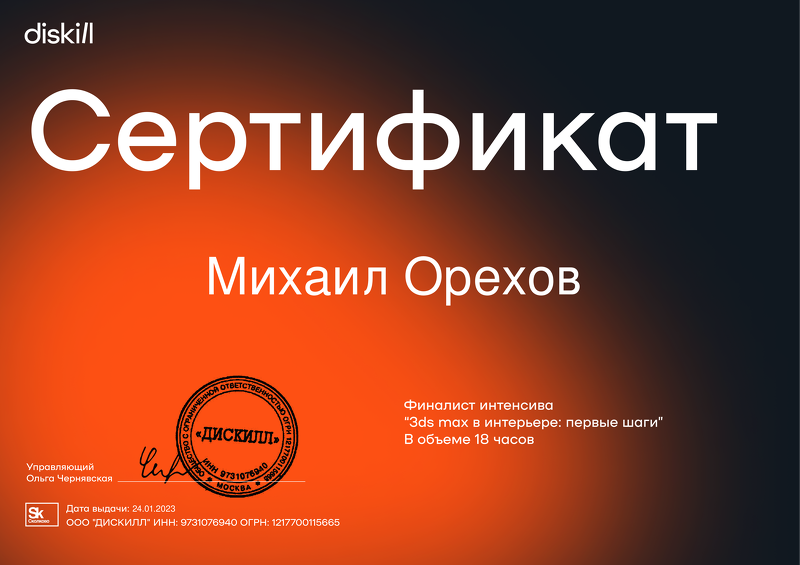
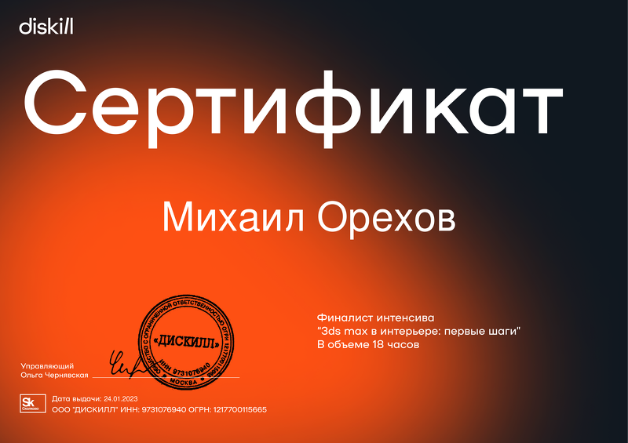

|
Орехов Михаил Николаевич инженер-программист Год рождения: 18 марта 1963 Семейное положение: женат Образование: Высшее, Московский Энергетический Институт (МЭИ), тепло - энергетический факультет. Специализация: Основное оборудование тепловых и атомных электростанций. Наличие автомобильных прав: имеются Владение иностранными языками: английский (технический), немецкий (школьная программа), турецкий (изучаю) Тлф.8(916)7767669 |
Ищу творческую работу связанную с программированием (желательно удалённое программирование). Могу решать задачи инженерно-технических расчетов. Проектирования и реализации систем реального времени для контроля и мониторинга процессов. Есть навыки написания микромодулей для расширения программных комплексов по графической (GDI-векторная, растровая графика) и информационной направленности. В своих работах применял также парсинг в интернете и работу с базами данных MySQL, MariaDB, MS SQL, BerkleyDB и др.
| Название предприятия | Должность | Год |
|---|---|---|
| ООО НПФ "ОВЕН-К" | Инженер-программист | 2003-2006 |
| АО "ДЖЭТ" | Инженер-программист | 2007-2011 |
| АО ВНИИАЭС | Инженер-программист, гл. Специалист |
2011-2022 |
| №n/n | Обучение | Наименование сертификата | Год окончания |
|---|---|---|---|
| 1. | Московский энергитический институт | Диплом. Инженер-теплоэнергетик. Основное оборудование ТЭС и АЭС. | 1986 |
| 2. | МВТУ им. Баумана | MICROSOFT.M1015: Mastering MFC Development Using MS Visual C++ | 2000 |
| 3. | МВТУ им. Баумана | MICROSOFT.M1012: Mastering COM Development Using MS Visual C++ | 2000 |
| 4. | АО "INTERFACE" | Групповая разработка сложной информационной системы с использованием IBM Rational Suite | 2005 |
| 5. | ИНТУИТ | Inproduction in 1C:Enterprise 8.0 | 2012 |
| 6. | ГК Проектная практика | Управление проектами по стандартам IPMA/COBHET | 2012 |
| 7. | ГК Проектная практика | Методология японского стандарта по управлению инновационными проектами и программами на основе системы знаний P2M | 2012 |
| 7. | ООО "ДИСКИЛЛ" | 3ds max в интерьере: первые шаги | 2023 |
| 7. | АКАДЕМИЯ интернет маркетинга | Специалист по Яндекс Директ | 2023 |


 

Опыт работы в программисовании с 1985г. В своих работах для решения разых задач, применял языки программирования Fortran, MS ASSEMBLER, ANSI C, C++, C#, Python. Базы данных MySql, MariaDB, MS SQL. Есть знания работы с протоколами TCP/IP, UDP, SNMP, SMTP, ModBas, c интерфейсами RS-232, RS-485, USB, COM. Есть необходимые навыки использования объектно-ориентированного подхода программирования, паттернов проектирования, оптимизации программного кода. Программировал системы Real-time под Windows и Linux, c компиляторами MS C++, GCC. В средах Borland C++, MSVisual C++ (v. 6-2022), MSVisual Code и др. В последнее время (3 года) программирую на С# - для более быстрой разработки бизнес приложений (сделанные приложения см https://www.soltek24.ru) в основном работа с базами данных MySql, Entity Framework, Linq .Net, Framework for Windows, WPF. В приложениях Excel пишу макросы на VBA. В последнее время увлекся написанием программ для Internet на Python - парсеры, краулеры. Также делаю сайты на WordPress, Tilda. Сайты MVC C# на начальном уровне - знакомлюсь, есть ли в этом потребность, стоит ли тратить время на изучение этой технологии построеия сайтов с нуля. Могу работать с Autocad, 3ds max(в части дизайн проектов, построение интерьеров). На дополнительных курсах обучаюсь по SEO. Могу использовать HTML+CSS.